| 상품 | 군마트 | 쿠팡 | 차이 | |
|---|---|---|---|---|
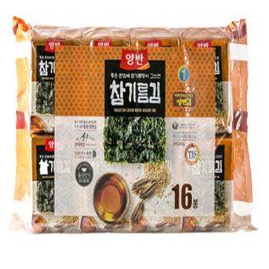 | 동원 양반 참기름 식탁김 16봉 64g | 2,590원 | 5,980원 | -57% |
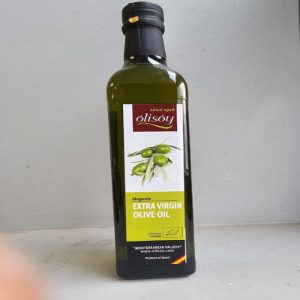 | 디엔씨트레이딩 올리소이유기농엑스트라버진올리브유 500ml | 13,900원 | 29,000원 | -52% |
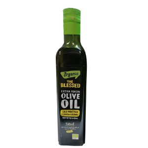 | 서울루션 더블레스드 유기농 엑스트라버진 올리브유 500ml | 15,900원 | 30,400원 | -48% |
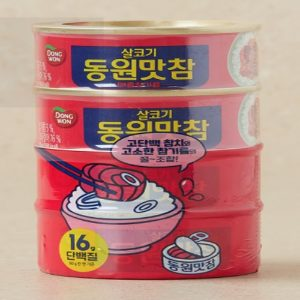 | 동원맛참 매콤참기름 90g*4 360g | 4,950원 | 8,400원 | -41% |
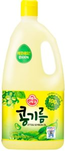 | 오뚜기 콩기름1.8L | 4,760원 | 6,650원 | -28% |
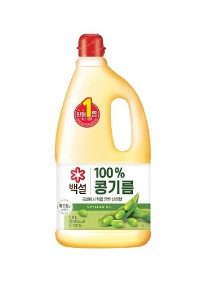 | 씨제이제일제당 콩기름 1.5L | 5,120원 | 7,050원 | -27% |
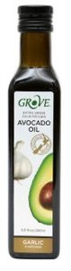 | 그로브 아보카도 오일 마늘향 250ml | 11,550원 | 15,880원 | -27% |
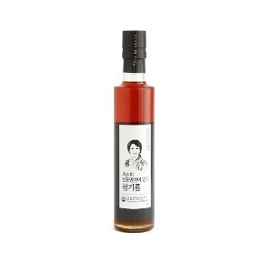 | 승인식품 최순희전통명장이만든 참기름 300ml | 11,130원 | 14,800원 | -25% |
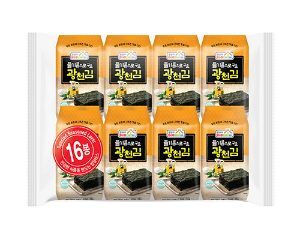 | 밥달라스 들기름으로구운광천김 64g | 5,670원 | 6,980원 | -19% |
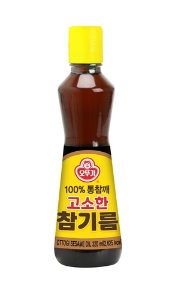 | 오뚜기 고소한참기름 320ml | 8,070원 | 9,400원 | -14% |
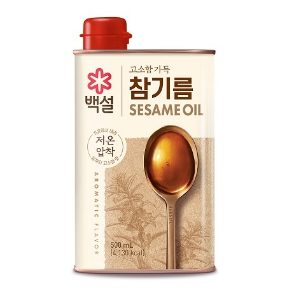 | 씨제이제일제당 고소함가득참기름 500ml | 6,510원 | 7,270원 | -10% |
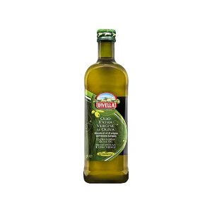 | 영인코퍼레이션 디벨라 엑스트라버진 올리브유 1L | 20,610원 | 23,000원 | -10% |
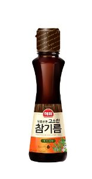 | 사조대림 고소한 참기름 320ml | 5,360원 | 5,700원 | -6% |
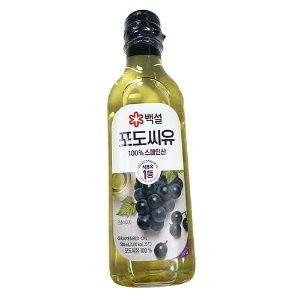 | 포도씨유 500ml | 4,360원 | 4,600원 | -5% |
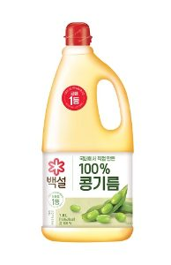 | 씨제이제일제당 백설콩기름 1.8L | 5,920원 | 6,050원 | -2% |
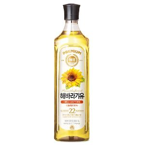 | 사조대림 해표 해바라기유900ml | 4,750원 | 4,695원 | +1% |
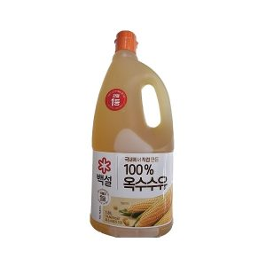 | 씨제이제일제당 옥수수유 1.8L | 7,370원 | 7,250원 | +2% |
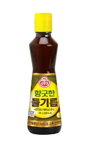 | 오뚜기 향긋한들기름 320 ml | 11,340원 | 10,350원 | +10% |
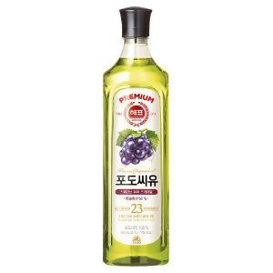 | 사조대림 포도씨유 900ml | 6,840원 | 5,850원 | +17% |
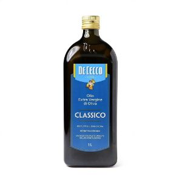 | 보라티알 데체코 올리오 엑스트라버진올리브유 1리터 | 22,360원 | 16,370원 | +37% |
식용유·참기름 말고 다른 것도
더 이상 직접 비교하지 마세요.
군마트 상품을 한곳에 모아 PX 가격과 온라인 가격을 쉽게 비교할 수 있습니다.
이게 실제 화면이에요. 상품을 누르면 바로 열립니다.
국방가족 분들이 조금이라도 편하게 군마트를 이용하셨으면 하는 마음으로 만들었습니다.
국방가족을 위한 작은 재능기부입니다.